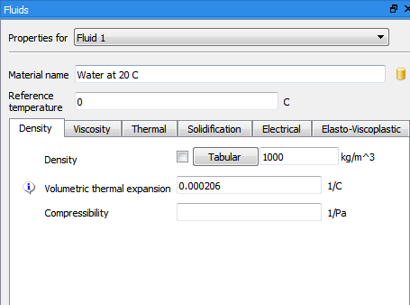
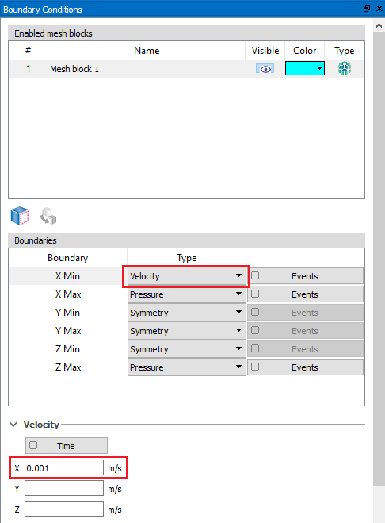
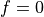
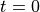
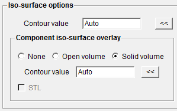
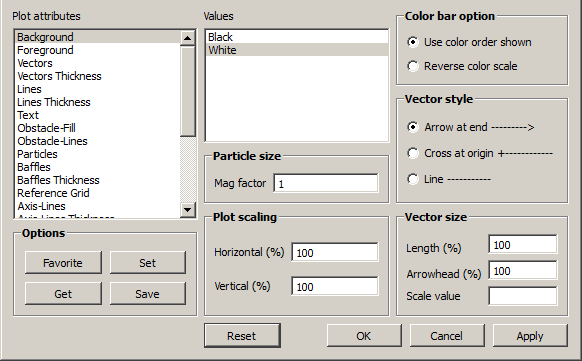

Tutorial / Quick Start¶
This chapter is intended to familiarize new users with major components of the FLOW-3D Graphical User Interface (GUI) and to walk through the setup and running of various simulations. The exercises in this chapter are intended to cover the basics of using FLOW-3D . New users are advised to work through all of the problems and the variations. The tutorial problems were chosen to illustrate a variety of topics and address a number of questions that might be encountered. This tutorial should be used while you are sitting at your computer running FLOW-3D .
A brief section on the Philosophy for Using CFD is followed by an introduction to the Important files and ways to run simulation files. After those introductory sections there is a discussion of how to navigate the Simulation Manager, a basic description of how to set up a model, run simulations, and post-process results. More information on each of these steps can be found in the Model Setup, Computing Results, and Post-processing chapters.
Philosophy for Using CFD¶
Computational Fluid Dynamics (CFD) is a computer solution of the governing equations for fluid flows (the conservation of mass, momentum, and energy) in up to three dimensions. The specified governing equations are discretized and solved using the numerical methods described in the Theory chapter.
Using CFD software is in many ways similar to setting up an experiment. If the experiment is not set up correctly to simulate a real-life situation, then the results will not reflect the real-life situation. In the same way, if the numerical model does not accurately represent the real-life situation, then the results will not reflect the real-life situation. The user must decide what things are important and how they should be represented. It is essential to ask questions before starting, including:
- What do I want to learn from the calculation?
- What is the scale and how should the mesh be designed to capture important phenomena?
- What kinds of boundary conditions best represent the actual physical situation?
- What kinds of fluids should be used?
- What fluid properties are important for this problem?
- What other physical phenomena are important?
- What should the initial fluid state be?
- What system of units should be used?
It is important to ensure that the problem being modeled represents the actual physical situation as closely as possible. We recommend that users try to break down complex simulation efforts into digestible pieces. Start with a simple, easily understood approximation of your process and work it through before moving on to incrementally add more complicating physical effects. Simple hand calculations (Bernoulli’s equation, energy balance, wave speed propagation, boundary layer growth, etc.) help with selecting physics and parameters and provide checks to compare with results.
Understanding the strengths and weaknesses of CFD can also help guide an analysis. CFD is an excellent analysis option when:
- Standard engineering calculations are not practical due to the complexity of the geometry, physics, or the required level of detail.
- Physical experiments are expensive
- More information about the flow is needed than can be gathered from an experiment
- Accurate experimental measurements are hard to obtain due to dangerous or hostile conditions, processes that do not scale well, etc.
- Communicating complex flow information
CFD is less effective when:
- The scales of interest vary by several orders of magnitude since solutions require significant computational resources, assumptions to reduce the domain size, or semi-empirical models to account for unresolved physical phenomena.
- The important physical phenomena are unknown since these are inputs to the CFD simulation.
- The physical phenomena are poorly understood or extremely complex because the governing equations tend to be semi-empirical or have limited ranges of applicability.
There are a few other important notes to keep in mind when using CFD:
- CFD is a numerical solution of the specified governing equations subject to the prescribed initial and boundary conditions. As such, it is critical that the model setup - i.e. what equations are to be solved, the material properties, the initial conditions, and the boundary conditions - all match the physical situation as closely as possible.
- Numerical solutions of equations usually require approximations of some kind. It is prudent to review the assumptions and solution method for a physical model before using it.
- Digital computers are subject to rounding errors related to how numbers are represented in binary with finite precision. Try to avoid situations where the differences of very similar numbers must be computed since this exacerbates the problem. An example situation of this is when the simulation domain is located far from the origin.
Important files¶
There are many files associated with a FLOW-3D simulation; the most important
ones are described below. All files have a naming convention like
prepin.* where prepin is the file type and the *
is the simulation name, e.g. prepin.example_simulation.
prepin.*: This is the input file for the simulation. It contains all of the input variables that describe the simulation setup.prpgrf.*: This is the preprocessor output file. It contains the computed initial conditions and can be used to check the setup before running the simulation.flsgrf.*: This is the solver output file. It contains the final results of the simulation.prperr.*,report.*,prpout.*: These are Preprocessor Diagnostic Files.hd3err.*,hd3msg.*,hd3out.*: These are Solver Diagnostic Files.
Using descriptive simulation names is a good idea, as is keeping all simulation files together in a single folder. However, keep in mind that extremely long file names can be problematic depending on the operating system.
Note
- If the simulation name is
inp(i.e. the input file isprepin.inp) then the output and diagnostic files will all have the name.dat, e.g.flsgrf.dat. - It is strongly recommended that all input files be stored in a local directory on the machine instead of a network location. The solver will run faster, the GUI will be more responsive, and it eliminates the possibility of a network problem interfering with a running simulation.
Simulation Manager¶
The Simulation Manager is a tab in FLOW-3D that is primarily used to organize simulations, run simulations, and show status information on running simulations.
Workspaces¶
Workspaces are an integral part of the Simulation Manager and the way that files are handled in FLOW-3D . They are essentially folders that contain and organize simulations. For example, it is possible to have a workspace called Examples that contains several example simulations and another workspace called Validations that contains different validation cases, as shown below:
Creating a new workspace¶
For this tutorial, let’s create a workspace to contain the simulations that we will be creating:
Go to
Enter
Tutorialas the workspace name.The default location will be in the current user’s home directory. You could locate it elsewhere, but the default location will be fine for our purposes.
Make sure that the Create subdirectory using workspace name box is checked. This will create a new subdirectory for the workspace in the file system, making it much easier to organize simulation files.
Press OK to create the new workspace. You will now see it appear in the Portfolio.

Closing a workspace¶
Sometimes it is convenient to close a few workspaces to clean up the Portfolio and make it easier to navigate. Note that closing a workspace simply removes it from the Portfolio; it does not delete the workspace from the computer. To close a workspace:
- Right click on an existing workspace and choose . Alternatively, you could select (left-click) a workspace in the Portfolio and press the delete key.
- You will be asked to confirm that you want to close the workspace. Choose Yes.
- The Portfolio will no longer contain the closed workspace.
Opening an existing workspace¶
There will probably be a time where you need to open an old workspace. For example, you may want to review the setup of an existing simulation before creating a similar one for a new project. To open an existing workspace:
Choose
Browse to the directory that contains the workspace file. In this case, look for
Tutorial.FLOW-3D_Workspace.Press OK to load the workspace.
Working with simulations in a workspace¶
Now that we know how to use a workspace, let’s add some simulations to it.
Add an example¶
The simplest way to add a working simulation to a workspace is to add one of the included example simulations. These are simple, fast-running simulations that are designed to illustrate how to use different features in FLOW-3D . To add an example to an existing workspace:
Highlight the desired workspace in the Portfolio
Choose . Alternatively, you can right-click on the workspace and choose
Select an interesting-sounding example in the Examples dialog and press Open. I chose the example.
This opens the New Simulation dialog.
The default simulation name and location should be fine, because it is recommended to ensure the directory is in the workspace location. FLOW-3D will place all of the simulation files in a separate subdirectory in this workspace directory that we named here, making file organization much easier.
Select the unit system for the simulation. Standard unit systems are recommended, but a Custom unit system can be chosen for independent selection of each unit.
Press OK to add the new simulation to our workspace.
Removing a simulation from a workspace¶
It is occasionally necessary to remove a simulation from a workspace (this just removes the simulation from the workspace; it does not delete the simulation from the computer). To remove a simulation from a workspace:
- Right click on an existing simulation in the workspace (in this case use the example that you added in the previous section) and choose . Alternatively, you could select (left-click) a simulation in the workspace and press the delete key.
- The workspace will no longer contain the simulation.
Delete a simulation from all workspaces and disk¶
In addition to removing a simulation from the workspace, it may also be necessary to delete all of the simulation files from disk. To remove a simulation from the workspace and also delete the simulation files from the disk:
- Right click on an existing simulation in the workspace (in this case use the example that you added in the previous section) and choose .
- A window will appear that will allow the user to select which files from the simulation directory that are to be deleted. Select the desired files to be deleted and then press to delete these files, or press to abort the operation.
- If was selected, the workspace will no longer contain the simulation and all of the selected setup files will be deleted from the simulation directory.
Warning
This operation cannot be undone, so be sure that you want to delete these files before proceeding.
Adding an existing simulation to a workspace¶
To add an existing simulation to a workspace:
Right-click on an open workspace and choose . You can also select a workspace and then choose
Browse to the location of the
prepin.*file and choose Open.The simulation will now appear in the workspace.
Adding a new simulation to a workspace¶
Most of the time, you will be creating new simulations instead of using existing ones. To add a new simulation to a workspace:
Right click on an existing workspace and choose .
You will be prompted to enter a name for the simulation. For this example, call it
heat transfer example.Then determine the Units system for the simulation using the drop-down list. The available options are SI with a basis of Kg, m, s and coul and CGS with a basis of g, cm, s and scoul for Mass, Length, Time and electric Charge respectively. Engineering units are also available and have a basis of slug, ft, s but no units for electric Charge. If none of these options are convenient, a Custom units system is available where the basis for Mass, Length, Time and electric Charge is customizable.
The Temperature units should also be specified using the drop-down list. The available options are Celsius and Kelvin for SI and CGS units as well as Fahrenheit and Rankine for Engineering units. If the Custom units option is selected, the available Temperature units change depending on the basic units chosen for Mass and Length.
Note
Choose the simulation units of the new simulation carefully. Once a set the units cannot be changed.
The template used for this simulation will be the default template. A template is a saved set of values that will apply the settings it contains to the new simulation. If another template needs to be used, click on the browse icon () to pick from a list of available templates.
The default simulation name and location should be fine, because it is recommended to ensure the directory is in the workspace location. FLOW-3D will place all of the simulation files in a separate subdirectory in this workspace directory that we named here, making file organization much easier. If you wish to save teh simulation at a different location, please use the the browse icon () to navigate to the desired location.
Click OK to add a new simulation called
heat transfer exampleto the workspace.
Other options¶
While we will not be using these options right now, it should be mentioned that right-clicking on a simulation gives access to additional options, the most commonly used of which are and . The first option creates a copy of an existing simulation, while the second option copies an existing simulation and configures the restart options to use the results from the original simulation as the initial conditions for the restart simulation.
See also
See the Restart section in the Model Setup chapter for more information on restart simulations.
Preprocessing and running simulations¶
Preprocessing a simulation¶
Preprocessing a simulation computes the initial conditions and runs some diagnostic tests on the input file. It is useful when you want to confirm that the problem is configured correctly or if you need some diagnostic information from the preprocessor. You do not need to preprocess a simulation before running it. To preprocess a simulation:
- Right-click on a simulation in the workspace and choose Preprocess Simulation–>Local.
For this case, choose the example problem in the workspace since
the input file
heat transfer examplehas not yet been fully defined. - The preprocessor should start, print some information in the text window at the bottom of the Simulation Manager, and then complete successfully. The icon next to the simulation name in the Portfolio will also change to indicate that the simulation preprocessed successfully.
See also
See the Preprocessing section in the Computing Results chapter for more information.
Running a simulation¶
Running a simulation solves the governing equations for the problem (physical models, geometry, initial conditions, boundary conditions, etc.) that is defined in the input file. To run a simulation:
- Right-click on a simulation in the workspace and choose .
For this case, choose the example problem in the workspace since the input
file
heat transfer examplehas not yet been fully defined. - The solver will start, print some information in the text window at the bottom of the Simulation Manager, update the plots, and then complete successfully. The icon next to the simulation name in the Portfolio will also change to indicate that the simulation ran successfully. You will also see the simulation appear in the Queue while the solver is running, then disappear when it completes.
See also
See the Running the Solver section in the Computing Results chapter for more information on running a simulation and reading the diagnostics.
Running all simulations in a workspace¶
You can also run all simulations in a workspace by right-clicking on a workspace and choosing .
See also
See the Running the Solver section in the Computing Results chapter for more information.
The queue¶
A simulation is automatically added to the bottom of the queue when it is submitted to preprocess or run. The simulation is then preprocessed or run when the solver has an available license and computational resources. Simulations that are in the queue but are not yet preprocessing or running can be reordered or removed from the queue using the controls at the bottom of the queue.
See also
See the Computing Results chapter for more information.
Finding files in the file system¶
If you need to access the files in the file structure for some reason (perhaps
to place an *.STL file in the folder), you can click on the displayed
path to the Simulation Input File to go to the corresponding
location in the file system.
Model Setup¶
The Model Setup tab is where the input parameters for the currently- selected simulation on the Simulation Manager are defined. This includes Global settings, Physics models, Fluids, Geometry, Meshing, Component properties, Initial conditions, Boundary conditions, Output options, and Numerics.
This section will guide you through the setup of a simple, albeit somewhat contrived, example simulation showing the the thermal plume (bottom) generated by a heated copper block (top; red) on a bed of sand (top; blue) submerged in a stream of water.
This tutorial is not intended to be a comprehensive discussion of how the methods or models work, why an option was selected, etc. - it’s just a quick overview of what needs to be done to set up this specific simulation. The details of the methods/models and reasoning for what is done here can be found in the other chapters of the user manual.
To begin, create a new workspace and add a new simulation. See Creating a new workspace and Adding a new simulation to a workspace for guidance on how to do this.
Controls¶
Listed here are the mouse controls used in the graphical display areas of the FLOW-3D user interface:
BEHAVIOR BUTTON / KEY ACTION DESCRIPTION Rotate Left Click and hold Click and hold the left-mouse button and move the mouse in the Meshing & Geometry window. The model will rotate accordingly. Zoom Middle-button / Scroll wheel Scroll / click and hold Roll the middle wheel or click and hold the middle-mouse button while moving the mouse forward and backward to zoom. Pan Right Click and hold Click and hold the right-mouse button and move the mouse in the window. The model will move with the mouse. Set focus on object N/A Hover cursor over object Hovering the curser over an object will activate the object for further manipulation via the right-click menu. The object will highlight as it is activated. This is only done when the preference on the Meshing & Geometry tab is enabled. Select Left Double-click Double-clicking on an object will select and activate the object for further manipulation via the right-click menu. This is only enabled if the preference on the Meshing & Geometry tab is disabled. Access object properties Right Click Right-clicking on the highlighted object will present a list of options to identify the object, show/hide, enable/disable, adjust transparency, etc. Return cursor coordinates (probe) Left shift+click Hold the Shift key to turn the cursor into a target. Click while holding the Shift key to get the coordinate of a surface, shown in the lower left-hand corner of the screen. Place pivot point Left cntrl+click Hold the Ctrl key to turn the cursor into the pivot icon. Click while holding the Ctrl key to set the pivot point. The view will rotate around the pivot point. Toggle the Custom Pivot button above the view pane to turn the pivot point off.
There are also toolbar options which are helpful. To find out the purpose of any option, mouse-over the icon.
Global¶
To create a simulation for this tutorial, right-click on the desired workspace and choose, Add New Simulation…. Give it the name, ‘heat transfer example’ and add to a workspace as described earlier in the tutorial section Adding a new simulation to a workspace. Choose SI and Kelvin as the Units system and Temperature respectively. Remember that once set, the units for the simulation cannot be changed.
Click on the Global icon  to open the Global
widget. This is where the defined units are displayed and where simulation
finish time is set. For this simulation set the finish time to 200 seconds.
Important details about the simulation can be added here too in the Notes
field.
to open the Global
widget. This is where the defined units are displayed and where simulation
finish time is set. For this simulation set the finish time to 200 seconds.
Important details about the simulation can be added here too in the Notes
field.
See also
See the Global section of the Model Setup chapter for more information.
Physics¶
Click on the Physics icon to open the Physics widget.
For this problem the default settings of , , and are all correct.
The relevant physical mechanisms (i.e. additional governing equations or terms in the governing equations) are defined on the Physics widget. To activate a model, left-click on the icon for that model and select ‘Activate’. For this simulation the following models need to be activated:
Density evaluation: This model accounts for the variations in density that create the thermal plume. Choose and check the Include volumetric thermal expansion box.
Gravity and non-inertial reference frame: This adds a body force representing gravity, so enter -9.81 for the Z component of gravity.
Heat transfer: This model accounts for heat transfer in and between the fluid and solid objects. For this simulation choose for the Fluid internal energy advection and check the box to enable . The remaining options should be left at their default values.
Viscosity and turbulence: This model accounts for viscous stresses in the fluid. Check the option and leave the remaining options at their default values.
See also
See the Physics section of the Model Setup chapter for more information.
Fluids¶
The properties for Fluids are defined within the Fluids widget of the tab. The Fluids widget can be accessed by clicking the Fluids icon, on the vertical toolbar. First make sure that is selected as the Properties for option. The properties for can be entered manually, but a quick way to set the properties for common fluids is to load them from the Materials Database by clicking the Load material properties button, . Next, browse to the desired material - in this case choose - and click Load.
This simulation requires a property that is not in the database: the Volumetric thermal expansion coefficient. In the Density sub-tab, enter . The final property set should look like:

See also
See the Fluids section of the Model Setup chapter for more information.
Geometry¶
Click on the Geometry icon to open the Physics widget.
There are two geometries that need to be created for this simulation: the copper block and the sand bed. Both be created using Primitives; a more realistic simulation could use Primitives, Stereolithography (STL) Geometry File(s), and/or Raster File(s) to define the geometry.
To create the copper block first click on the icon. This will create a rectangular subcomponent that extends between the specified limiters. Make the copper block extend +/- 2 cm from the origin in the x and y directions and extend from 0 to 4 cm in the z-direction. Leave the remaining options as they are to make the block solid and add it to a new component
Choose OK to finish the subcomponent definition and move on to the
component definition. In the Add component dialog that
automatically opened leave the Type as , enter Copper block in the Name field, and choose
OK to finish the component definition.
Click on the icon again to create the bed subcomponent. Use the extents shown below and set the Add to component selection to .
Choose OK to finish the subcomponent definition and move on to the
component definition. In the Add component dialog that
automatically opened leave the Type as , enter Bed in the Name field, and choose
OK to finish the component definition. The final geometries
should look like what is shown below:
After adding a new component, a length scale is automatically created in the Graphics Display Window in both the horizontal and vertical directions. This ruler tool can be used to quickly gauge the extents of generated geometrical objects.
Note
Only the geometry shape definitions are shown in the display area, so no information about whether an object is a solid or a hole is shown. This can be done later after Meshing using the option.
See also
See the Geometry section of the Model Setup chapter for more information.
Component properties¶
The heat transfer model requires some material properties in order to solve the conduction equation in the solid components. These properties are set on the Component Properties widget which can be accessed from the icon.
Each component must have and defined. To set these for the copper block first select the component in the Geometry widget. Then select in the Component Properties widget and define the properties as shown below:
It is possible to use an alternative method for defining the Component Properties, described here for the second component (the bed). In this approach start by clicking on component and choosing icon next to the Material field. Next, browse to the material - in this case choose and choose Load.
See also
- See the Fluids section of the Model Setup chapter for more information.
- See the Model Reference chapter for more information on what properties are required for a given physical model.
Meshing¶
The mesh is created and defined on the Mesh widget, which is
accessed via the icon. Press the  to add a new
mesh. To quickly adapt the extents of the mesh to the geometry select the
radio button and leave the offset radio
button on As a percent. Set the cell size under Block
properties to 0.004.
to add a new
mesh. To quickly adapt the extents of the mesh to the geometry select the
radio button and leave the offset radio
button on As a percent. Set the cell size under Block
properties to 0.004.
The top of the mesh needs to be extended upward in the z-direction. Select the Z-Direciton tab and enter 0.2 for Mesh Plane 2.
This simulation is going to be a 2D. Follow the same process to set the Y-Direction extents to -0.005 and 0.005. And set the Total cells to 1.
The final mesh can be viewed in different ways by changing options in the drop-down menu just above the Graphics Display Window. The option will show every grid line, the option will show only Mesh Planes, and the option only shows the extents of the mesh.
Additionally, how the solver will perceive the final geometry in the mesh can be viewed with the icon. This will convert the geometry definitions into the area fractions and volume fractions using the FAVORTM algorithm. To do so, click on the icon and then choose Generate.
After a few moments the following should be shown, where the gray area indicates solid material.

{kind=link}
{kind=link}
{kind=link}
{kind=link}
{kind=link}
{kind=link}
{kind=link}
{kind=link}
See also
- See the Meshing section of the Model Setup chapter for more information on meshing.
- See the Reviewing the FAVORized Geometry and Mesh section of the Model Setup chapter for more information on FAVORTM and the option.
Boundary conditions¶
FLOW-3D automatically applies the appropriate boundary condition(s) on
components based on the component type and the active physical models.
However, the boundary conditions on the faces of the mesh block(s) must be set
manually for each mesh block in the Boundary Conditions widget
( ). For this tutorial, three of the boundary conditions need to
change from the default condition: the X
Min, X Max, and Z Max boundaries.
). For this tutorial, three of the boundary conditions need to
change from the default condition: the X
Min, X Max, and Z Max boundaries.
X Min:
Click on the X Min listing under the Boundaries section of the Boundary Condtions widget. Set the Boundary type to and enter 0.001 for the X velocity.
Next, change the drop-down box from to and set the Fluid elevation to be 0.15.
Lastly, set a temperature of 298K.
X Max:
Click on the X Max listing under the Boundaries section of the Boundary Condtions widget. Set the Boundary type to and enter 0 for the Pressure.
Next, change the drop-down box from to and set the Fluid elevation to be 0.15.
Lastly, set a temperature of 298K.
Z Max:
Click on the Z Max listing under the Boundaries section of the Boundary Condtions widget. Set the Boundary type to and enter 0 for the Pressure.
Next, set the Fluid fraction to be 0.0.
Lastly, set a temperature of 298K.
See also
See the Mesh Boundary Conditions section of the Model Setup chapter for more information.
Initial conditions¶
The Initial Conditions need to be set for both the solid objects (the components) and the fluid inside of the domain:
Components: The only initial condition required for the solid objects in this simulation is the initial temperature. This is set in the Component Properties widget for each component in a similar manner to what was done for the Component properties. Following the same approach as was used before when setting the Component properties, set the initial temperature of to 350K and the initial temperature of to 298K.
Fluid: There is a little more to set for the initial conditions of the fluid. In this case the fluid configuration, temperature, velocities, and pressure distribution all need to be set. The fluid initial conditions are set on the Initial widget, opened by clicking on the Initial
 icon.
icon.Select the Fluid listing and set the pressure to . Set the temperature to 298K and the x, y and z velocities to 0.0.
Next, choose the Height/Volume listing and the dropdown. Set the to 0.15.
See also
See the Initial Conditions section of the Model Setup chapter for more information.
Output¶
There are seven data types in FLOW-3D ; options controlling what data will be
written to the results file and how frequently are set on the
Output widget found by clicking on the Output  icon. The different data types are:
icon. The different data types are:
- Restart: All flow variables. Default output frequency = 1/10th of the simulation time.
- Selected: Only user selected flow variables. Default output frequency = 1/100th of the simulation time.
- History: Data showing the variation in one variable vs. time. Examples would include the time step size, mean kinetic energy, flow rates at baffles, etc. Default output frequency = 1/100th of the simulation time.
- Short print: Text diagnostic data written to the
hd3msg.*file. Default output frequency = 1/100th of the simulation time. - Long print: Text diagnostic data written to the
hd3out.*file. Default output frequency = 1/10th of the simulation time. - Solidification: Only available if the solidification model is active.
- FSI TSE: Additional output options for deformable solids.
The default output rates will generally be adequate for this simulation. However, some additional configuration of the Selected Data will be beneficial. Set the Selected data interval to 0.5 and then check the boxes next to the , , , and . This will output these quantities every 0.5 seconds.
See also
See the Output section of the Model Setup chapter for more information.
Numerics¶
The default numerical options work well for most simulations so, in the absence of a compelling reason to deviate from the default options, it’s best to leave them alone for now.
This concludes the setup of the example problem that was started in the Model Setup section. It is now ready to run, so follow the steps in Preprocessing and running simulations to run the simulation.
See also
See the Numerical Options section of the Model Setup chapter for more information.
Checklist for General Simulation Setups¶
A high-level outline of the necessary steps to set up a simulation is given below. It’s not a comprehensive list - just a quick guide covering the typical steps, some important things to consider, and a suggested order for the setup.
Before starting¶
- Draw and annotate a diagram of the physical problem: This diagram should include geometric dimensions, the location of the fluid(s), any relevant body forces, velocities of moving objects, relevant heat transfer mechanisms, etc. The completed diagram should be an image of the physical problem with all of the relevant engineering information about the problem.
- Determine a modeling approach: Decide how to approach the problem using the annotated diagram as a guide. Start by figuring out how many fluids are in the problem, if they are miscible, if it is necessary to solve equations in more than one fluid, and if compressibility is important. Then decide which physical mechanisms are important. Add the relevant engineering information for each of these options (e.g. fluid types, heat transfer mechanisms, etc.) to the diagram. Try to justify why physical mechanisms were included or ignored – this helps catch mistakes early in the simulation process when they require little time to fix.
- Draw the computational domain on the diagram and describe the physical situation on the edges of the computational domain: Write which boundary condition type best represents the physical situation at the boundary. If none of the available boundary condition types are a reasonable approximation of the physical situation at the boundary then this boundary must be moved to elsewhere.
Model setup: General¶
- Add some notes describing the problem, the purpose of the simulation, the case number, etc.: Notes help explain and justify the setup for future users or for later reference. It should discuss the purpose of the simulation, the analysis approach, etc.
- Choose which solver and how many processors to use
- Choose the unit system: Use small units (e.g. mm-gm-msec) for modeling small scale problems and large units (e.g. SI) for larger scale problems. This helps avoid round-off errors due to machine precision.
- Select the number of fluids, interface tracking option, and flow mode: Use the annotated diagram as a guide for this step. The number of fluids refers to whether the equations governing the conservation of mass, momentum, and energy are to be solved in regions where the fluid fraction (representing fluid one) or where the fluid fraction (fluid 1 and fluid 2). The interface tracking options define whether changes in the fluid fraction should be sharp or diffuse, while the flow mode defines how regions where  are treated in two fluid problems.
- Define the finish condition(s): Choose when to end the simulation. It can be based on time, the fill fraction, or other steady-state measurements.
- Define how to restart the simulation from existing results (optional): The restart options apply when restarting simulations from an existing results file. The restart options define what information is taken from the restart source file and what information is reset using the initial conditions in the simulation.
Model setup: Physics¶
- Activate the relevant physical models based on the annotated diagram
Model setup: Fluids¶
- Define the properties of fluid 1: Define the appropriate physical properties for the active physical models using the annotated diagram as a guide.
- Define the properties of fluid 2 (if using): Define the appropriate physical properties for the active physical models using the annotated diagram as a guide.
- Define any properties of the interface: Define the properties of the interface between regions of f=1 and f=0. These include the properties for surface tension, phase change, and diffusion.
Model setup: Meshing & Geometry¶
- Check all STL files for errors: Check all STL files for errors using ADmesh, netfabb Studio, or a similar program. This helps catch any problems with the geometry definition before spending time on the model setup.
- Import and define all subcomponents and components: Define the 3D solid geometry to match the physical case as described in the annotated diagram. The end result should be an exact replica of the physical geometry. Use descriptive names for each part and include the components that will be mass sources.
- Define the properties for all components: Define all of the material properties, surface properties, motion properties, etc. for each component based on what was drawn in the annotated diagram. Wait to define mass source properties until the boundary conditions are defined.
- Define any springs and ropes and the associated properties for each
- Define the mesh to match the simulation domain described in the annotated diagram:
Make sure that the edges of the domain are in the locations identified on
the diagram. Also, remember that three cells are required to identify an
interface (a cell with that is adjacent to a cell with
 and
another cell with ). Try to use cells that are small enough that at
least five cells fit across the thinnest expected contiguous regions of
and .
and
another cell with ). Try to use cells that are small enough that at
least five cells fit across the thinnest expected contiguous regions of
and . - Define any baffles that define geometry
- Define the boundary conditions, mass sources, mass-momentum sources, valves, and vents: The boundary conditions (including mass sources, mass-momentum sources, valves, and vents) prescribe the solution at a given location for all equations to be solved. Use the annotated diagram to make sure that what is specified at each boundary (or source, etc.) matches reality for the flow solution, heat transfer solution, electric potential, etc.
- Define the initial conditions for the fluid and any components: Initial conditions prescribe the solution everywhere in the domain for all equations (the flow solution, heat transfer solution, electric potential, etc.) at time . Use the annotated diagram to make sure that what is specified in the initial conditions is a good approximation of reality at this time. Remember to set initial conditions for the components as well as for the fluid domain.
- Define any measurement devices (sampling volumes, flux surfaces, and history probes)
Model setup: Output¶
- Choose the basis for the output (time, fill fraction, or solidified fraction):
- Choose any additional output to add to the restart data:
- Choose what information to write into the selected data:
- Define the output rates for the restart, selected, history, short print, and long print data: The default rates are (10 outputs)/(simulation end time) for restart and long print data and (100 outputs)/(simulation end time) for selected, history, and short print data.
Model setup: Numerics¶
- Choose any required non-default numerical options: The numerical options in FLOW-3D are intended for advanced users and give significant control over the numerical approximations and methods used to solve the governing equations. When used improperly some of these options can cause problems with the solution so, in general, do not adjust these settings without first understanding what the option does and having justification for the adjustment.
Post-processing in FLOW-3D¶
This section covers how to use the postprocessor integrated into FLOW-3D ; for a tutorial on the more powerful, external postprocessor FlowSight, see the FlowSight documentation. Also, this section uses the results file that is generated by running the example problem. For guidance on how to run this example problem see Add an example and Preprocessing and running simulations.
The primary reference for using FlowSight is the the FlowSight user manual that is accessed from the menu in FlowSight.
See also
- See the Post-processing in FLOW-3D section of the Post-processing chapter for more information on the postprocessor integrated in FLOW-3D .
- See the Post-processing in FlowSight section of the Post-processing chapter for more information on FlowSight.
Existing Plots¶
Existing plots are pre-defined plots that are automatically generated by the solver. User-defined plots are described in the Custom Plots section below.
Click on the tab. The FLOW-3D Results dialog will be presented; if no message appears (the Analyze tab opens), select to open the same dialog.
Select the radio button. Two types of files will be shown in the data file path box, if they exist. Files with the name
prpplt.*contain plots created automatically by the preprocessor, while files with the nameflsplt.*contain plots automatically created by the postprocessor as well as plots pre-specified in the input file.Select
flsplt.Flow_Over_A_Weirand click . This will cause the Display tab to open automatically.A list of available plots appears at the right. A particular plot may be viewed by clicking on the name of that plot in the list; plot is shown below.
Custom Plots¶
Return to the tab. Select to open the dialog.
Select the radio button to see full output files. Full output files include
prpgrf.*files andflsgrf.*files. Since the simulation has been run, the preprocessor output file has been deleted and incorporated into theflsgrffile.Select the
flsgrf.Flow_Over_A_Weirfile in the dialog and click .
The Analyze tab will now be displayed. There are many ways to visualize the results of the simulation. The available plot types are:
- Custom: Can be used to manually modify output plots using the output codes in the Customizing Plots Using the FLSINP File section of this manual. Note that this is an advanced option.
- Probe: Displays graphical and text output for individual cells, boundaries, components, and domain-wide (global) variables vs. time. See Probe Plots and Probe: Data at a Point vs. Time for more details.
- 1-D: Cell data can be viewed along a line of cells in the X, Y, or Z direction. Plot limits can be applied both spatially and in time. See 1-D Plots and 1-D: Data Along a Line vs. Time for more details.
- 2-D: Cell data can be viewed in X-Y, Y-Z, or X-Z planes. Plot limits can be applied both spatially and in time. Velocity vectors and particles can be added. See 2-D Plots and 2-D: Data in a Plane vs. Time for more details.
- 3-D: Surface plots of both fluid and solid can be generated and colored by cell data. Additional information such as velocity vectors, particles (if present), and streamlines can be added. Plot limits can be applied both spatially and in time. See 3-D Plots and 3-D: Data on a Surface vs. Time for more details.
- Text Output: cell-by-cell Restart, Selected, and Solidification data can be written to text files. See Text Output and Text: Spatial Data Output in ASCII Format vs. Time for more details.
- Neutral File: Restart and Selected Data can be output at specified points (interpolated or cell-centered), defined in a separate text file. See Neutral File: Spatial Data Output at User-defined Coordinates vs. Time for more details.
- FSI TSE: Output from the finite-element fluid/solid interaction and thermal-stress evolution physics packages. See FSI / TSE: Structural Data on Surfaces vs. Time for more details.
3-D Plots¶
Select the tab.
Select . This is the variable that is used to draw a surface. The surface is drawn through all cells that meet the Contour Value criteria for the selected Iso-surface variable. Fraction of fluid is the default, and will show the fluid surface.
Select . This selection determines which variable is used to color the iso-surface (in this case, the fluid surface will be drawn colored by pressure).
Select . will display the solid components along with the fluid. In a previous step, you did this by selecting Complement of volume fraction as the iso-surface, but this option allows simultaneous plotting of both the fluid and solid surface.
Move the sliders to the min and max positions (0 to 1.25 seconds).

Click the button to switch to the Display tab and generate a series of 11 plots between t = 0.0 and 1.25 seconds which show the weir structure along with fluid surfaces colored by pressure. There are 11 plots because Restart data was selected.
The available plots are listed in the Available Time Frames list. Click to step between the time frames, or double-click a time frame to display it. The first and last time frames should look like the following:
Return to the and choose the radio button from the Data Source group.
Notice that both sliders in the Time Frame selector are at the right now so that only the last time frame will be generated. This is done automatically by the interface when Selected data is chosen since there are many time frames available and it could take a long time to render them. Move the left-hand slider to to render all available time frames.
Click the button. Within a few seconds the view will switch to the Display window and 101 plots will be listed in the Available Time Frames list. Click repeatedly to step between the time frames.
Show Symmetric Flow¶
Since the simulation was set up with a symmetry plane down the center of the weir, only half of the weir structure is being simulated and displayed. For presentation purposes, you probably want to show both halves of a symmetric model.
Go back to the tab and select the check box, as shown below.
Click . The fluid surface should now appear open at the symmetry boundary on the Display tab.
Select from the toolbar menu above the display.
Select the check box in the dialog to mirror the results across the Y = 0 plane.
Select and .
Double-click the final time frame. The display shows a full weir structure as shown below.
Create a 3-D Animation¶
The next step will be to create an animation of the 3-D fluid surface. Animations are movies created from the frames in the Available Time Frames list. To improve the visual effect of animations, it is recommended that a common color scale be applied to all frames.
Return to the tab.
Select both radio buttons in the Contour Limits group box.
Click to re-draw and return to the Display tab.
Repeat your selection of to mirror the results across the Y = 0 plane.
Select as shown below, and select after reading the message that appears.
Click and hold the left mouse button while dragging to select the portion of the screen to animate. A selection box will appear around the region you selected.
Select the red button above the display pane. A dialog will appear to start the animation.
The default name for animations is
out.avi. A more descriptive name is recommended as shown below.The default frame rate is 10 frames per second. This simulation has a finish time of 1.25 seconds, and 100 plots at regular time intervals, so the ‘real-world’ rate is 80 frames/second. This might be too fast, so enter instead and press .
Each time frame will be rendered to the Display window and bitmap files will be written in the simulation directory. Once this process is complete, the following dialog will appear.
Click the button to begin the next step of the process. A new process (BMP2VAI.exe) is launched, and a new Video Compression window will appear for selecting a compression method. If it’s hidden behind another window, bring it to the front.
The default compression for animations is uncompressed. This is not recommended for most animations since the file size can be too large to load in a viewer. Select if using Windows, or if using Linux. The selection here depends on what video codecs your computer has available, and what will be available on the machines you use to display the video.
Unselect the checkbox so that the quality of animations is not limited by the data rate.
Click to begin the compression process. When the compression is complete, the following dialog will appear.
Click . The animation process is now complete.
The fastest way to find the .avi file in Windows Explorer is to go to the tab and click on the link labeled .
Play the animation by double clicking on the
.avifile. If you don’t have the correct codec installed to read the compressed format you selected previously, then consider installing an open-source multi-codec video player.
2-D Plots¶
Select the the tab. The most useful plane to view results for this simulation is the X-Z plane at the weir centerline, which is located at the plane Y = 0.0.
Choose the radio button.
Drag both to Y = 0.25 (the cell center y-coordinate closest to Y = 0.0). You will also note that the same location is identified as , indicating that the cell in question is the second in the domain. The first cell is outside of the mesh, and is used for computing boundary condition properties. The default is pressure and plain velocity vectors are selected by default. The solid geometry is displayed automatically with all 2-D plots, so it does not need to be activated like in 3-D plotting.
Click and enter and . Vectors will now be plotted every other cell. Select to accept the vector options.
Click to generate a time sequence of 2-D plots of pressure in the Y = 0 plane. Graphics similar to following will appear, where T = 0.0 seconds (left); T = 0.125 seconds (middle); and T = 1.25 seconds (right).
Select the button in the upper right-hand corner of the Display screen.
Experiment with the various options such as changing line colors, vector lengths and arrowhead sizes. Select to see your changes. When you are done, select and to return to the default settings and close the dialog. If there is a set of options you prefer for all plots, you may save them by selecting the button.
1-D Plots¶
Select the the tab. This tab allows line-chart plots of cell-by-cell output variables such as pressure, fluid depth, fluid elevation, and velocity along a row of cells at one or more plot times.
Pick as the Data Source. The available variables now show only those selected for more frequent plotting.
Select as the Data Variable. Hydraulic data is available since it was selected on the Output tab.
Select because the flow direction in this simulation is primarily parallel to the x-axis.
Move the slider to so that the cells nearest the flow centerline in the Y-direction are displayed.
By default the entire X range will be displayed. You may move the X-direction sliders if you wish to limit the extents of the plot. The location of the Z-direction slider will not matter since only one free-surface elevation is recorded for each column of z-cells in a given x,y location. The sliders should be at and seconds.
Click . A series plots from t = 0.0 to t = 1.25s will be listed in the plot list on the Display tab. There are a number of modes in which to view these plots. The default mode is the Single mode and is shown in the drop down box below the Format button.

To compare plots of fluid surface elevation at various times, select the from the drop down box.
Click to select plots , , and in the right-hand pane. The plot names also show the times at which they were recorded: (t = 0.0, 0.15s, and 1.25 s). The output appears as shown below.
To save this plot to a bitmap or Postscript file, select the button.
Check the check box to capture the overlay plot (and make only a single output file).
Select the button to create the image file.
The resulting image file will be located in the simulation directory (remember how to find this from the Simulation Manager tab) and will be named
plots_on_screen.bmp.
Probe Plots¶
Select the tab. Time history plots are created from this tab as line-graphs or text output of a variable vs. time. There are three types of time-dependent data in FLOW-3D , which are selected from the Data Source group.
- Spatial data: Restart and Selected data sources. Time-dependent values of a single x, y, z cell center coordinate will be plotted. Values can be integrated with respect to time, differentiated with respect to time, or consolidated with a moving average (in time).
- General history data: Global quantities which vary only with time. Typical quantities are mean kinetic energy, time step, and convective volume error. This data type also includes all data from specified measurement locations (baffles, sampling volumes, history probes) as well as integrated output for moving or stationary solids and springs/ropes, when those options are selected on the Model Setup –> Meshing and Geometry tab.
- Mesh-dependent data: Time-dependent quantities (computed or user-specified) at mesh boundaries. Typical quantities are flow rate at a boundary and specified fluid height at a boundary.
Select the radio button under Data Source. Notice that the X, Y, and Z Data point sliders turn gray. This is because General history data is not associated with any specific cell.
Select from the list.
Select to open the Plotting Units dialog.
Select .
Select , , , or to convert and output the results in the unit system of your choice. Showing and converting units requires that a unit system was selected on the Model Setup –> General tab. You checked this in an earlier step; the geometry and fluid properties were specified in the centimeters/grams/seconds system.
Select to close the Plotting Units dialog.
Select to generate a graphical output of the data. The output shows mass-averaged mean kinetic energy for all of the fluid in the domain over time. The plot will appear as shown, with unit labels based on your selection in the previous step. The plot indicates that the total kinetic energy is oscillating around some mean value. As the oscillations become smaller, the simulation approaches steady-state flow.
Return to the tab.
Output the graph as text data by selecting in the Output Form group and then re-select .
The output can be saved to a text file by selecting the button in the text dialog that appears.
Select to close the output window.
Text Output¶
Select the tab.
Text output works the same way as the Probe tab, except that only cell-by-cell data (Restart or Selected) can be output (no component, measurement-station, or global data), and more than one cell can be selected to output data for each plot time. Cells are selected in 3-D blocks using the sliders. The default spatial extents are set to the entire domain.
Experiment with outputting text data on your own.
FLOW-3D and TruVOF are registered trademarks in the USA and other countries.